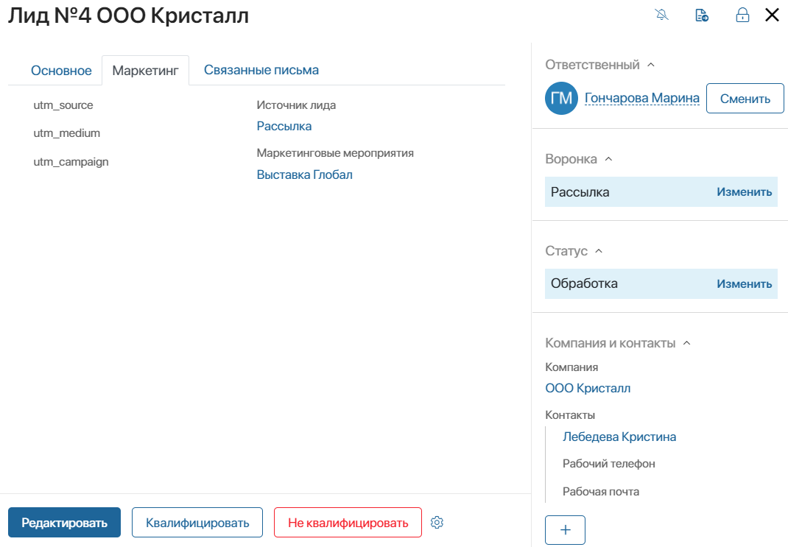

A lead’s page stores all the important information about a lead: the company’s name and contact person, current tasks, status, etc.
By default, the page includes a sidebar and three tabs: General, Marketing, and Linked Emails.
You can customize lead pages, for example, add or delete fields.

General tab
Activity stream
The left part of the lead page features the activity stream. Here you can discuss the lead with track the history of work on the lead.
Moreover, the activity stream stores the recordings of incoming calls from contacts specified on the lead page as well as their duration and date. You can listen to the recordings and leave brief comments under them.

Note that in come BRIX versions incoming call recordings are not displayed by default.
|

Lead tasks
To the right of the activity stream, you can see all the current and completed tasks associated with the lead. To schedule a new activity, click the +Task button and select the type of activity you need from the drop-down list: Call, Meeting, Webinar, Email, or Task.
Read more about working with activities in the CRM tasks article.

Lead details
Above the Activity stream and Tasks, you can see basic information about the lead. Additional data about the contacts, the company, and the associated deal can be found in the sidebar.
To add or change the lead‘s data, click the Edit button. In the form that opens, you can do the following:
- Specify the Product that the customer is interested in.
- Add the Lead source or the Marketing activity that the lead was generated from.
- Specify the Sales-readiness: (Informed, Interested, or Urgent need).
- Add the associated company.
- Add the associated contact.
The lead’s page also displays the Qualification type field. Once the lead is qualified, the qualification method will be displayed in this field. It can be:
- Creating a deal and company.
- Creating only a company.
Find out more in the Manage statuses. Lead qualification.
Moreover, you can customize the page by adding or deleting fields. Read more about how to do it below, in the Customize the lead page section.
Marketing tab
On the Marketing tab you can specify the Lead source and Marketing activities the lead was generated from.
Moreover, this tab shows data collected using UTM tags.
Properties for UTM tags are added to the context of the Leads app by default:
- utm_source. Where the traffic came from.
- utm_medium. Traffic type.
- utm_campaign. Name of the marketing campaign.
Using the information on this tab, you can identify the source that most leads came from and analyze your marketing team’s efficiency.

Linked Emails tab
If you linked your email inbox with the Email workspace, you can manually link emails with leads.
Emails are displayed on this tab using the Linked emails widget. Users who have the permission to view the app item can see the entire conversation with the customer.
You can click an email text or title on a lead’s page to view its whole content.

Note that if the tab and the Linked Emails widget are not shown on lead pages, you need to add them to the form manually. Read more about it in the Form templates article.
Sidebar
By default, the sidebar is displayed on the right side of the lead page, no matter which tab you are viewing. Here you can see information about the employee responsible for the lead, the lead’s pipeline, status, duplicates, and recent activity associated with it.
Responsible sales rep
If you don’t specify a responsible sales rep when creating a lead, you can do it later on the lead’s page.
To do that, use the following buttons:
- Start work. The employee who clicks this button is automatically assigned to the lead.
- Assign. Click this button to select a user from a drop-down list and assign them to the lead.

After the sales rep is specified, the lead’s status changes from New to Processing.
Lead pipeline
On the sidebar you can see the pipeline the lead belongs to.
Users with the permission to edit app items can move a lead to another pipeline by clicking Change. This is possible if the administrator created several pipelines and allowed moving leads in the settings of the Pipeline widget. Read more in Move a lead to another pipeline.

Lead statuses
The sidebar displays the current status of the lead.
If manual status change is enabled in the pipeline’s settings, users with editing permissions can assign a different status to a lead.
To do it, click Change and select the new status for the item.
The default lead statuses are:
- New. This status is assigned to all newly created leads.
- Processing. Work with the lead is in progress, a sales rep is nurturing it.
- Qualified. You can set this status if the client is highly interested in the product. During the qualification process, you can create a new deal or company.
- Unqualified. Assign this status if the customer is no longer interested in buying.
Status changes are recorded. The date when a lead’s status changed is written to its activity stream. On the Kanban board, you can see how many days ago each lead was assigned the current status. For more information on working with statuses, read the Manage statuses. Lead qualification article.
You can also move a lead to another pipeline if the administrator allowed it in the settings of the App item status widget. Read more in Move a lead to another pipeline.
Company and contacts
The sidebar also shows information about the counterparty, the contact person, and the deal that the lead was qualified into. If the company or the contact cannot be selected from the existing entries, you can create the app items you need by clicking the plus button. You can also click Edit to select an existing entry from the associated app.
Duplicates
By default, the lead page includes the Duplicates widget. If you enabled duplicate detection rules for the Leads app, the widget will show matches found during duplicate search or items merged with the current lead.
Read more about duplicate detection in the Duplicates article.

Most recent activity
The Most recent activity widget in the sidebar shows the date a user planned work on the lead or interacted with its page. The data is shown in the following way:
- If some CRM tasks are planned, the widget shows the date of the most recent task and the number of days left before it’s due.
- If all CRM tasks for the lead are finished, the date the page was last edited is shown. For example, this can be the date a user wrote a comment in the lead’s activity stream or changed its status.
Showing recent activity allows you to track leads that sales reps haven’t worked with for a long time. For instance, you can create a business process to notify the responsible employee that a lead needs to be marked as lost because sales reps haven’t worked with it for a long time.
Customize the lead page
You can customize lead’s page according to your needs. For example, you can re-arrange, add, or delete fields as well as mark them as required or read-only.
начало внимание
Only users included in the Administrators group can customize the forms of the Lead app.
конец внимание
To start editing the lead page, click the  icon next to the Lead app and select Form Settings in the menu.
icon next to the Lead app and select Form Settings in the menu.
A window with the list of fields used on the page will open.

Switch to different tabs to customize the creation, editing, and view forms. Read more about working with forms in the Configure forms in Advanced Mode article.
These settings will be applied to all lead pages in all the pipelines.
Found a typo? Select it and press Ctrl+Enter to send us feedback